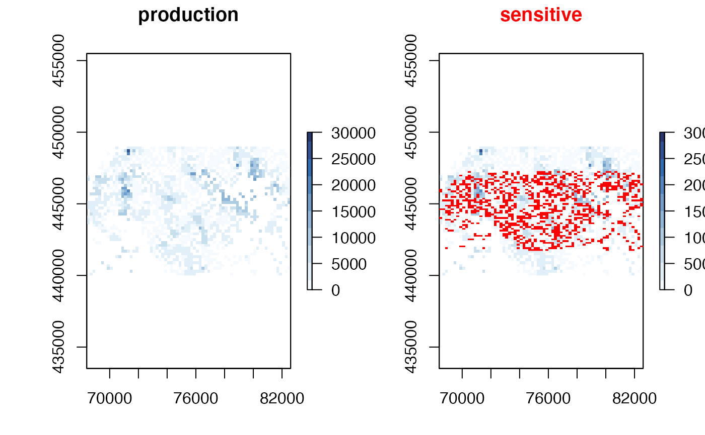
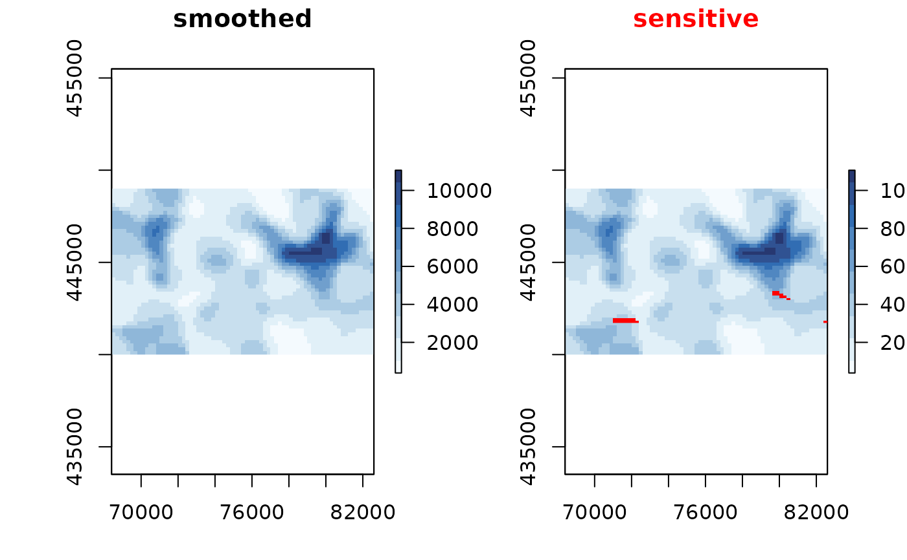
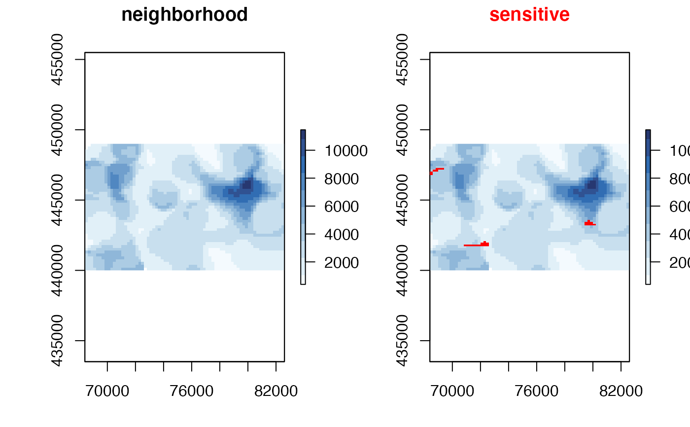

protects raster by summing over the neighborhood
Source:R/protect_neighborhood.R
protect_neighborhood.Rdprotects raster by summing over the neighborhood
Usage
protect_neighborhood(x, radius = 10 * raster::res(x$value)[1], ...)Arguments
- x
sdc_raster()object to be protected- radius
of the neighborhood to take
- ...
not used at the moment
Examples
# \donttest{
data(enterprises)
# create a sdc_raster from point data with raster with
# a resolution of 200m
production <- sdc_raster(enterprises, variable = "production"
, r = 200, min_count = 3)
print(production)
#> numeric sdc_raster object:
#> resolution: 200 200 , max_risk: 0.95 , min_count: 3
#> mean sensitivity score [0,1]: 0.6328234
# plot the raster
zlim <- c(0, 3e4)
# show which raster cells are sensitive
plot(production, zlim=zlim)

# let's smooth to reduce the sensitivity
smoothed <- protect_smooth(production, bw = 400)
plot(smoothed)

neighborhood <- protect_neighborhood(production, radius=1000)
plot(neighborhood)

# what is the sensitivy fraction?
sensitivity_score(neighborhood)
#> [1] 0.008774679
# }